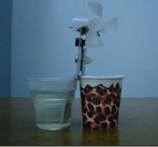
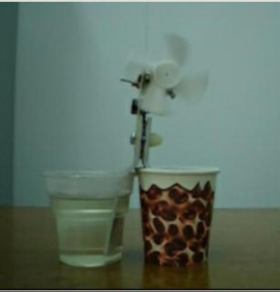

🎯 Deneyin Amacı
Isı farkı kullanarak elektrik enerjisi elde edilmesini gözlemlemek.
🧰 Gerekli Malzemeler
• Termoelektrik çevirici (Peltier)
• Sıcak su
• Soğuk su

🧪 Deneyin Yapılışı
Bir kaba sıcak su, diğerine soğuk su konur.
Peltier modülünün uçları bu kaplara temas ettirilir.
Sıcaklık farkı oluştuğunda elektrik üretimi gözlemlenir.

🧠 Deneyin Fiziği
Termoelektrik etki, sıcaklık farkının elektrik enerjisine dönüşmesidir.
Bu olay Seebeck etkisi ile açıklanır.
Sıcaklık farkı arttıkça oluşan gerilim de artar.
Bu sistemler enerji üretimi ve soğutma teknolojilerinde kullanılır.
🎬 Deney Videosu

Videoyu YouTube'da izlemek için görsele tıklayın.